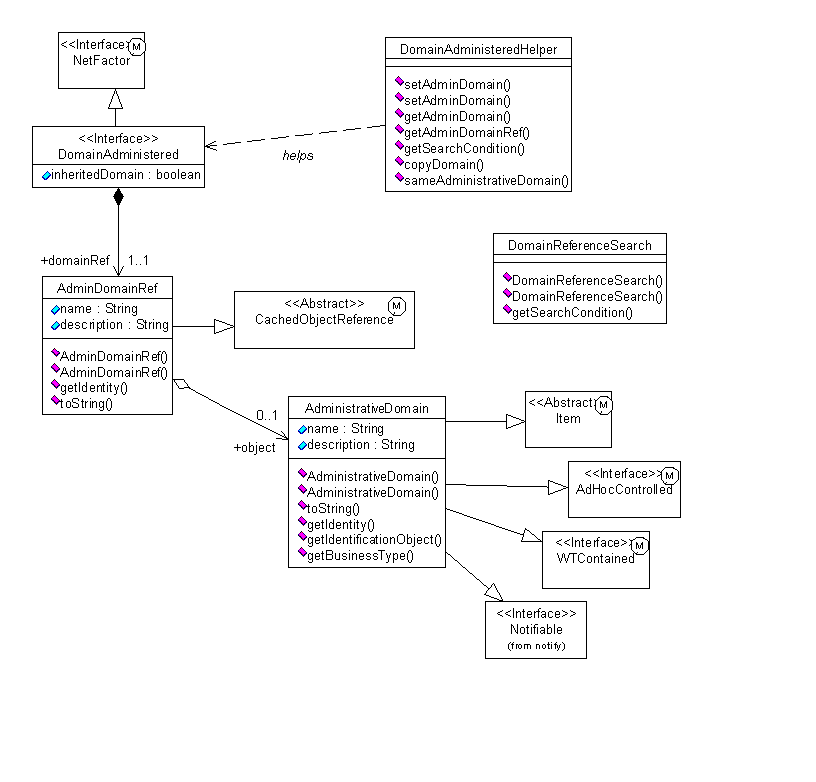

See: Description
| Interface | Description |
|---|---|
| AdministrativeDomainManager |
The AdministrativeDomainManager is an interface that contains signatures
of methods that retrieve and manipulate domain objects.
|
| AdministrativeDomainManagerSvr |
Supported API: true Extendable: false |
| DomainAdministered |
DomainAdministered is the interface that objects with administrative
behavior must implement. |
| Class | Description |
|---|---|
| AdminDomainRef |
The
AdminDomainRef class encapsulates a reference to an
AdministrativeDomain object. |
| AdministrativeDomain |
The
AdministrativeDomain class represents the set of objects
that are subject to the same administrative behavior. |
| AdministrativeDomainHelper |
The
AdministrativeDomainHelper class facilitates access
to the current implementation of the AdministrativeDomainManager
interface. |
| AdministrativeDomainManagerEvent |
AdministrativeDomainManagerEvent encapsulates the events
posted by an AdministrativeDomainManager. |
| AdministrativeDomainServerHelper |
Supported API: true Extendable: false |
| ClassnameCollationKeyFactory |
A collation key factory for classes.
|
| DomainAdministeredHelper |
The
DomainAdministeredHelper class provides methods for
manipulating the administrative domain reference information held by
objects that implement the DomainAdministered interface. |
| DomainRefCollationKeyFactory |
A collation key factory for admin domain refs.
|
| StandardAdministrativeDomainManager |
The
StandardAdministrativeDomainManager provides the default
implementation of the AdministrativeDomainManager. |
| Exception | Description |
|---|---|
| AdministrativeDomainException |
Exception thrown when an error occurs during the processing of administrative
objects.
|
The administrative
domain manager is responsible for defining domains and assigning domains to
business and system objects. Policies supported include access control (see the
wt.access package), file vaulting (see the wt.fv package), indexing (see the
wt.index package), and notification (see the wt.notify package).
An administrative domain can be regarded as the set of all
objects that have the same administrative behavior. Administrative policies are
defined for objects that belong to a domain. For an object to belong to a
domain, its class must implement the DomainAdministered interface. A
DomainAdministered object contains a reference to the domain to which it
belongs.

Administrative Domain Model
The AdministrativeDomain class extends Item (from the wt.fc package) that is also DomainAdministered. That is, domains are themselves subject to administrative rules and belong to another domain. All domains are descendants of the root domain. . The AdministrativeDomain class implements the AdHocControlled interface (from the wt.access package) and the WTContained interface (from the wt.inf.container package).
Access and manipulation of the domain of an object is
accomplished by the DomainAdministeredHelper, which both defines and implements
the
Four special domains are defined in the Site container during the installation process: the Root, the System, the Default and the User domains. These predefined domains cannot be deleted or modified (the names for these predefined domains are configurable through the wt.properties file). For more information about these domains and about administering domains, refer to the Windchill Business Administrator's Guide.
Changing the domain of an object is a valid operation and can be used to alter the administrative behavior of the object (for example, moving an object to the User domain gives the owner of the object unrestricted rights over the object).
All domain administered objects must belong to a domain. The domain should be assigned during object initialization (by the initialize method). Objects that extend the Item class are placed in the Default domain in the Item�s initialization. This can be overridden (or not) by the extending class. Failure to assign a domain to a domain administered object may cause runtime errors.
This service posts two events in case a change of domain is
performed on a domain administered object that is persistent. These events are:
The administration service listens for the following events:
PersistenceManagerEvent.
PersistenceManagerEvent.INSERT and PersistenceManagerEvent.
PersistenceManagerEvent.